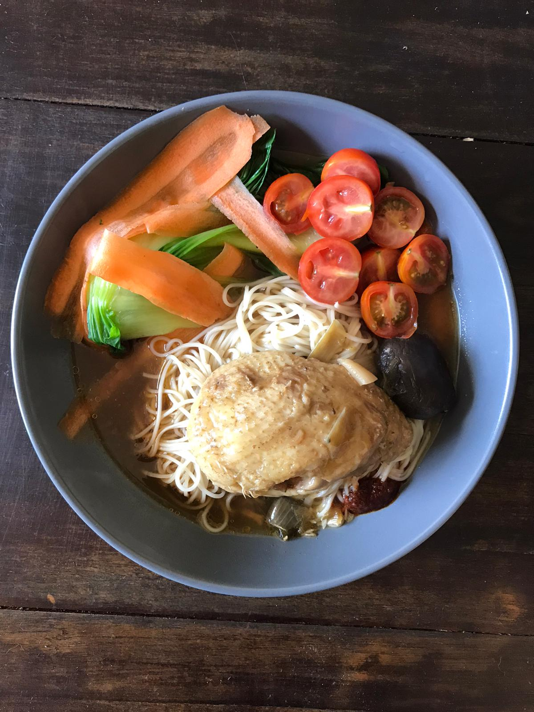

Soy Sauce Chicken (SD)
Today's breakfast dish draws on East Asian influences.
Soy Sauce Chicken broiled in ginger, garlic cloves, and spring onions.
(Inspired By)

Home-made soy sauce chicken that only took 30minutes!
Significant Ingredients
- Spring onions cut sideways
- 6 ginger cloves
- garlic chunks